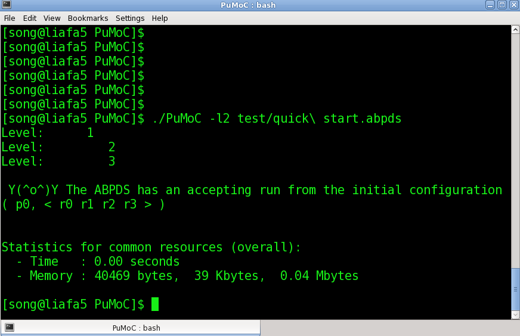
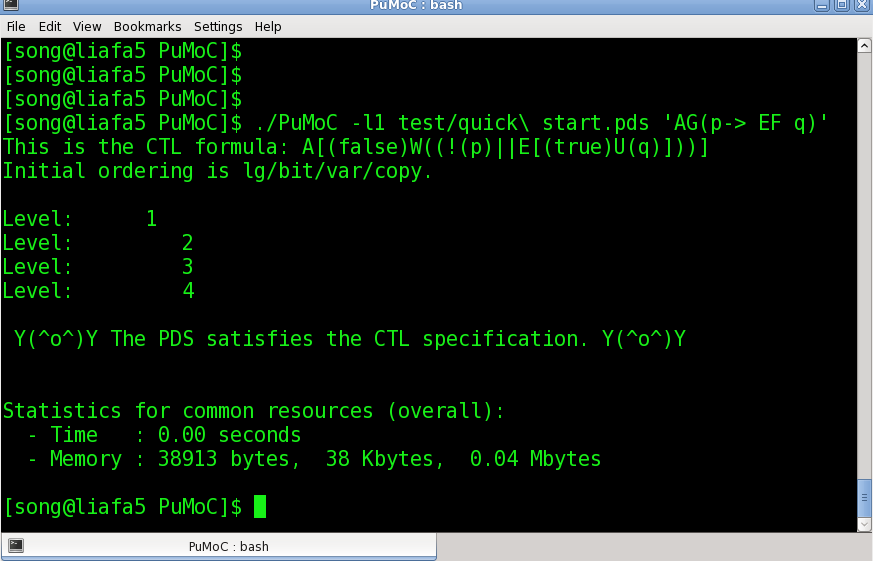
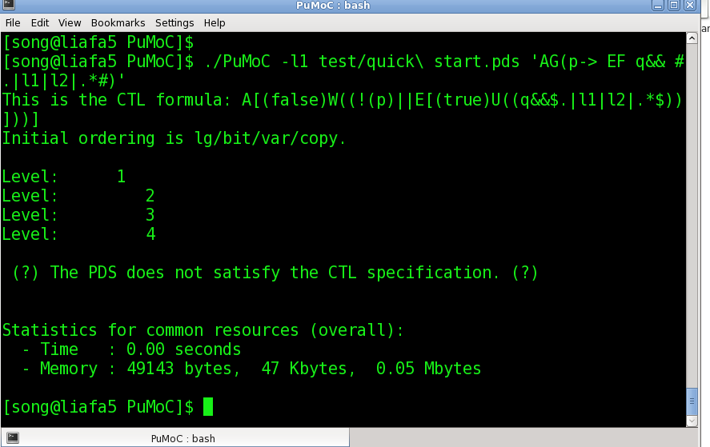
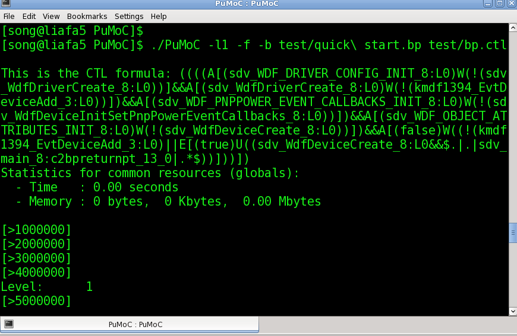
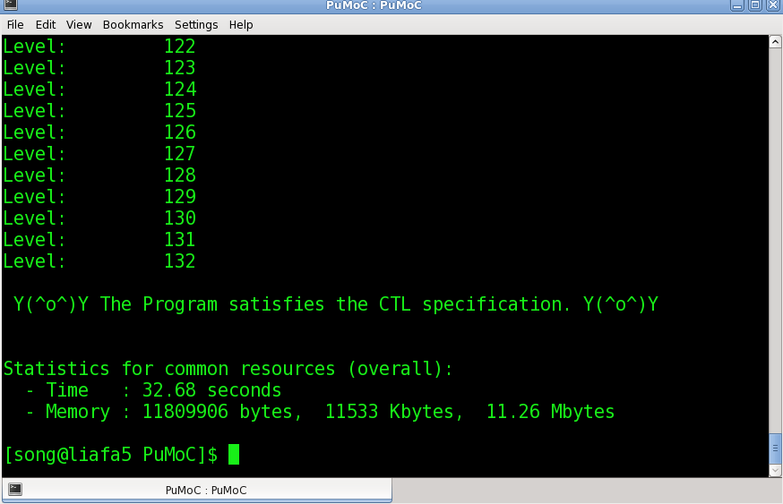

PuMoC
A CTL Model Checker for Sequential Programs
We show a short guide to run PuMoC in Linux.
Download PuMoC and run the following commands from the directory containing PuMoC.tgz.
tar -zxvf PuMoC.tar.gz
cd PuMoC
make
Now, you can evaluate an example: ./PuMoC -l2 test/quick start.abpds.
Here -l2 specifies checking the emptiness of the alternating Buechi pushdown system quick start.abpds. The following figure shows the results.

CTL model-checking For Pushdown Systems.
Hereafter, we assume that PuMoC has been installed in your computer and in the directory PuMoC. You can evaluate an example:
./PuMoC -l1 test/quick start.pds 'AG(p->EF q)'
Here -l1 specifies CTL model-checking for pushdown systems, 'AG(p->EF q)' specifies the CTL formula AG(p->EF q).
Or, You can evaluate an example:
./PuMoC -l1 -f test/quick start.pdstest/quick start.ctl
Here -f specifies reading the CTL formula from the file test/quick start.ctl. Results are shown in the following figure.

CTL model-checking for Pushdown Systems with Regular Valuations.
You can evaluate an example:
./PuMoC -l1 test/quick start.pds 'AG(p->EF (q&& #.|l1|l2|.*# ))'
Here #.|l1|l2|.*# specifies a regular predicate (regular valuations).|l1|l2|.*, where
. : matches any stack symbol, | : is the concatenation operator. E.g.,.|l1|l2|.* matches the word l3 l1 l2 l4 l2 l1....The option -f reads the CTL formula from a file. Results are shown in the following figure.

CTL model-checking for Boolean Programs.
You can evaluate an example:
./PuMoC -l1 -f -b test/quick start.bp test/bp.ctl
Here -b specifies CTL model-checking for the boolean programs test/quick start.bp. Note that, the option -l1fb has the same function as the option -l1 -f -b. Results are shown in the following figure.


CTL model-checking for C Programs.
First, you have to install Satabs. Satabs is in the directory Satabs of PuMoC. Using Satabs, you can translate a C program into a boolean program from the directory PuMoC
./Satabs/satabs Satabs/lock.c --save-bps
Using the option --save-bps, satabs translates the C program Satabs/lock.c taken from Satabs into a boolean program at the directory PuMoC called satabs.1.bp. Now, you can model-check the boolean program satabs.1.bp as above.
CTL model-checking for Java Programs.
To do CTL model-checking for Java Programs. First download and install JimpleToPDSolver by the following commands. JimpletoPDSolver transforms Java programs into pushdown systems with use/def informations.
tar xzf jimpletopdsolver.tgz
cd JimpleToPDSolver
ant compile
./JimpleToPDSolver -f javaprogram.pds "<examples.javaprogram: void main(java.lang.String[])>"
JimpletoPDSolver translates the javaprogram into the pushdown system javaprogram.pds. Now, you can model-check the pushdown system javaprogram.pds.
Copyright © 2011-2012 LIAFA, University of Paris Diderot and CNRS.